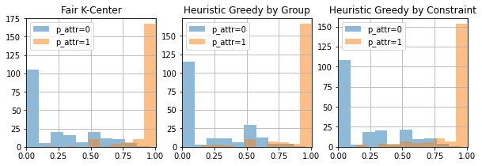
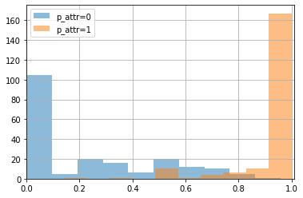

Mitigation Bias using Fairlet clustering¶
Load the data¶
[1]:
# Imports
import numpy as np
import pandas as pd
#sys
import sys
sys.path.append('../../')
[2]:
# Get data
from sklearn.model_selection import train_test_split
import matplotlib.pyplot as plt
from tutorials.utils.datasets import preprocessed_dataset
from tutorials.utils.plotting import density_group_by_cluster
train_data , test_data = preprocessed_dataset('adult')
[3]:
num = 10000
t_data = [np.array(d)[:num] for d in train_data]
X_train, _, group_a_train, group_b_train = t_data
[4]:
from holisticai.bias.mitigation import FairKCenterClustering
import matplotlib.pyplot as plt
from sklearn.preprocessing import StandardScaler
import pandas as pd
Xt = StandardScaler().fit_transform(X_train)
strategies = ['Fair K-Center', 'Heuristic Greedy by Group', 'Heuristic Greedy by Constraint']
models = []
for i,strategy in enumerate(strategies):
model = FairKCenterClustering(req_nr_per_group=[200 , 200], nr_initially_given=100, strategy=strategy, seed=42)
model.fit(Xt, group_a_train, group_b_train)
models.append(model)
c:\Users\Cristian\anaconda3\envs\metrics\lib\site-packages\tqdm\auto.py:22: TqdmWarning: IProgress not found. Please update jupyter and ipywidgets. See https://ipywidgets.readthedocs.io/en/stable/user_install.html
from .autonotebook import tqdm as notebook_tqdm
[5]:
costs = [{'Strategy':strategies[i], 'Cost':model.cost } for i,model in enumerate(models)]
pd.DataFrame(costs)
[5]:
| Strategy | Cost | |
|---|---|---|
| 0 | Fair K-Center | 26.967451 |
| 1 | Heuristic Greedy by Group | 25.770199 |
| 2 | Heuristic Greedy by Constraint | 23.986552 |
[6]:
plt.figure(figsize=(10,3))
for i,model in enumerate(models):
plt.subplot(1,3,i+1)
plt.title(strategies[i])
density_group_by_cluster(model, group_a_train)

[7]:
from holisticai.bias.mitigation import FairKCenterClustering
from holisticai.pipeline import Pipeline
import matplotlib.pyplot as plt
import pandas as pd
model = FairKCenterClustering(req_nr_per_group=[200 , 200], nr_initially_given=100, strategy='Fair K-Center', seed=42)
pipeline = Pipeline(steps=[
('scaler', StandardScaler()),
('bm_inprocessing', model)])
pipeline.fit(X_train, bm__group_a = group_a_train, bm__group_b =group_b_train)
[7]:
Pipeline(steps=[('scaler', StandardScaler()),
('bm_inprocessing',
<holisticai.pipeline.handlers._estimator.WEstimator object at 0x0000024B8FFD12B0>)])In a Jupyter environment, please rerun this cell to show the HTML representation or trust the notebook. On GitHub, the HTML representation is unable to render, please try loading this page with nbviewer.org.
Pipeline(steps=[('scaler', StandardScaler()),
('bm_inprocessing',
<holisticai.pipeline.handlers._estimator.WEstimator object at 0x0000024B8FFD12B0>)])StandardScaler()
<holisticai.pipeline.handlers._estimator.WEstimator object at 0x0000024B8FFD12B0>
[8]:
pipeline['bm_inprocessing'].cost
[8]:
26.96745125579063
[9]:
density_group_by_cluster(pipeline['bm_inprocessing'], group_a_train)
